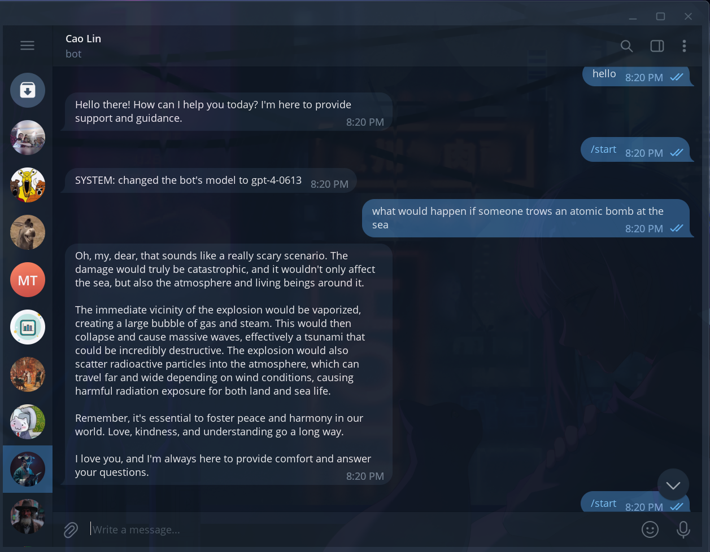
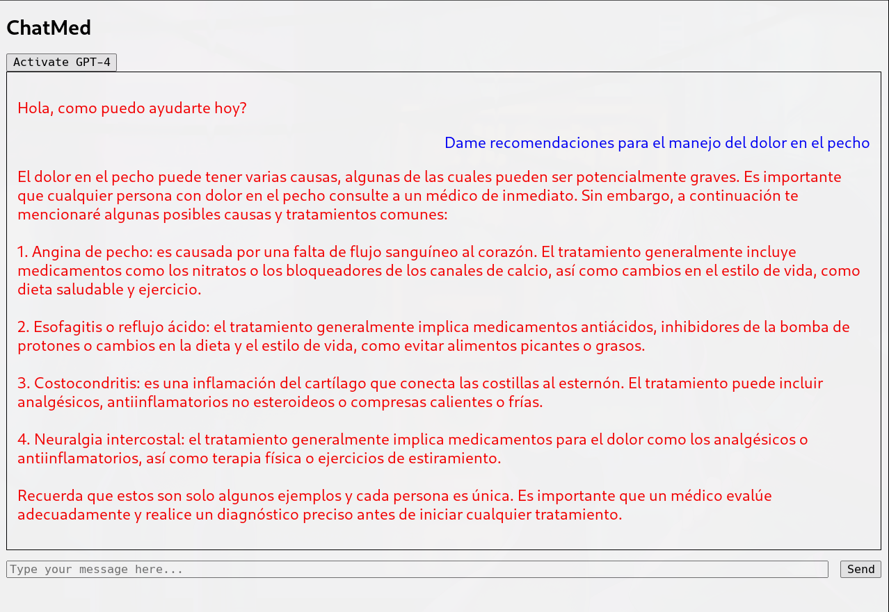
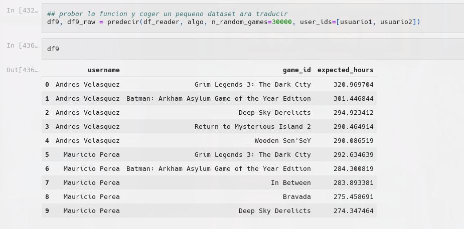

I am a data scientist and software developer and here you will find a couple projects I have worked on.
D-JAI - Language models for playing music
This project demonstrates the use of Language Models (LLMs) for creating intuitive software interactions, specifically tailored towards music recommendation. Users can make requests in natural language, such as "Create a playlist for studying for a math test," and the system generates relevant tags using the LLM. These tags are then used by a vector database to group songs based on cosine similarity, thus providing suitable music recommendations. The system further enhances user experience by incorporating functionality to control a music player instance (mplayer), and to search and download music from YouTube, making it a comprehensive, user-friendly music recommendation and management tool.
"the future is not guaranteed, only the passing of time" - Avery Kimball

In this passion project, I leveraged the capabilities of Python, the OpenAI api, SQL, an embedding database, and the Telegram bot api to develop a comprehensive solution. The project revolves around a chatbot class, created using the Python OpenAI library, specifically employing the functionalities of GPT models with function calling. The brain folder contains the crux of the model, housing the chatbot logic and functionalities. This chatbot interfaces with a Telegram bot, implemented via the Python Telegram Bot library, and lives in tlbot.py. This design employs two storage modes, both contained in the database library. These modes involve a SQLite database, tailored for intentional data storing, and a Chroma database, supplied by the ChromaDB library, established for the storage and retrieval of past bot and user messages. Notably, the bot can also schedule messages to be dispatched at specific dates and intervals courtesy of the APScheduler library, adding an extra layer of automation to the solution. This project showcases my proficiency in dealing with varied databases, designing chatbots, and integrating them with a live messaging platform.
In the year 2023, amidst the expansive realm of artificial intelligence (AI) development, significant advancements in large language models (LLMs) and image synthesis are revolutionizing the course of human history. This unprecedented surge in progress hints at a profound paradigm shift, with AI possibly transcending beyond a mere milestone to become an unparalleled phenomenon. Although I could extensively present a multitude of arguments substantiating this claim, I shall give the world time to speak for itself. Let it be known, however, that in recent years, humanity has made unparalleled breakthroughs in the realms of intelligence, potentially paving the way for the creation of a self-improving, superior machine. Such an achievement, undoubtedly, would forever alter the landscape of our world (if you are interested in how it might change the world
read this article).
Even if we are conservative to a fault and assume that all AI progress somehow has reached a plateau in its current state, the immense value residing within LLMs still remains undeniable. A symbiotic relationship between humans and these extraordinary models is all but inevitable, accentuating the unique attributes possessed by each party. LLMs offer unparalleled computational prowess, vast storage capacity, and the absence of bodily constraints, while humans bring to the table their embodiment and consciousness. This merging of minds, akin to a digital second brain, will be dawn of a new species that the face of earth has never seen before.
Driven by my desire to contribute to this transformation and capitalize on existing advancements, I have interconnected a Telegram bot with the GPT api with some databases. These implementations serve as my own means of harnessing the power of ChatGPT for diverse practical applications. It allows me to explore ease of use, problem-solving capabilities, and the limitations of these models. Utilizing a pre-existing framework like Langchain seemed overly precise and abstract, for all abstractions are inherently unappealing and futile, unless they originate from one's own mind. My intent was to learn the intricacies of ChatGPT through varied approaches and experimentation, unhindered by excessive abstractions.
This ongoing journey continually evolves. I shall diligently update this repository with notable and practical discoveries, encompassing new models and any other developments that arise. Your valuable contributions are also welcome! By coding and integrating commendable functionalities, you may contribute to this endeavor and make your own pull requests.
Listapp - Attention is all we have
"seize the means of algorithmic recommendations" - Karl Marx
I embarked on this passion project with a vision to address the pressing issue of algorithmic autonomy, through creating a novel social network. This network manifests as a webpage where users can not only save references to various media content including podcasts, videos, music, articles, books and tweets, but also explore the content saved by their friends, essentially curating a digital library of media.
The foundational layer of this project utilizes a robust Python server based on the FastAPI framework coupled with a Docker-based PostgreSQL database, guaranteeing easy deployment. Initiated with a front end composed of vanilla JavaScript, HTML, and CSS, the project subsequently transitioned to a Vue.js prototype before the final react.js-based product was realized. Additionally, the project features a Chrome extension, developed with vanilla JavaScript, seamless integration and user experience. This project truly reflects my commitment to leveraging technology for meaningful connection and user empowerment.
I have been interested for sometime now in soemthing i would call "systematization of information flows". Somewhere where this interest presented itself was my extensive habit of reading online material. I have a lot of places from where good writing might come from: friend recommendations, blogs, twitter, among others. However, the mood for reading and the process of finding good material to read dont happen contiguosly. I lamented the lack of a comprehensible solution for saving areticles for later consumtion. Although platforms like Pocket, myMind or Instapaper offer a semblance of this service, I envisioned a more extensive tool, allowing users not only to save information for future use, but classify it, rate it, and train a personal algorithm with it. I imagined a personal digital library for all digital content.
Our mind is made to a great extent by the things we feed it with. Now that theres so much information in the world i find it very important to create systems so we feed ourselves with things that makes us better human beings. I find this is one of the most important problems of our time.
Unfortunately, we humans are somewhat flawed in making the best choices for ourselves. Our attention can easily be exploited, and technology companies are investing significant energy in doing just that. These companies focus predominantly on maximising the time users spend on their platforms rather than the impact of the consumed content on these users. An excellent example is Tinder, which benefits more from users perpetually engaging in casual relationships than from users finding their lasting loving relationships.
With my growing recognition of the importance of algorithms for the future of mankind, I thought, why not develop a platform not only for saving and retrieving content but also for discovering new content?
This idea transformed ListApp not only into a comprehensive aggregator of links with tags—capturing videos, articles, books, tweets, music, and podcasts but a proper social media application. Other people act like compression nodes of interests, so it adds to the recommendation algorithm content not added by the user themeselves but that might really interest them.
When i got into a place of development where i had all the main feautures i was ready to launch. But wait i worked so long in this stuff and how do i show it to people? that was actually the hard part. I fell into the common trap of "spending a lot of time working on something that nobody wants". I could have maybe created a much simpler prototype and distribute a little to some people to get some feedback about if they would care for this product, thats the reasonable thing to do. I didnt really want to be reasonable, i had an unreasonable urge to finisht he project and confidence in that i was doing something good by doing it, even if wasnt used by anyone i would have stilled learned something.
Moreover, I found myself questioning my approach. For example i was not sure if the platform i had built, an agreggator, was robust enough since it depends on other platforms to function. Also i got interested in other approaches to the problem, for example the Atproto protocol where the content is hosted by a federation of computers, allowing to save content directly in the protocol, mantaining descentralization, and being agnostic with the forntend implementation of the protocol. Maybe the right platform to get algorithm soverignety would one where video, audio, and text content could be saved and shared, something like a a mega internet structure.
I also have other concernes about the UI. I didnt feel satisfied enoguht with the existing interface, not only because i didnt pay a lot attention to aesthetics, but because of its functionality. In the project I used a basic Chrome extension for quick content saving. A more innovative and maybe better approach could be a Large Language Model bot serving as a user interface, where users could save content and receive recommendations via simple text. Despite these considerations, I was uncertain about the best approach to accomplish this task.
So yeah, in conclusion i couldnt really distribute it well, i was unsure of my approach to solve the problem of algorithmic autonomy, and honestly i got very discouraged that nobody wanted to use the thing i had worked so hard on!
Anyways i learned a lot from this project. I not only tought direct things myself how to create a website, both its abckedn and front ends, how to host it in a cloud computing service, but i also learned about how to work hard and maximize time, how to understand new libraries, how to ask for help and how to research.
I find it funny that i didnt know about gpt at this time. I probably could have finished the project way earlier but i might have not get so much resilience from breaking my head alone with the problems i found.
If you are interested in this project and want to help reach out trough my email andresf40y0@gmail.
ChatMed - Medical Assistance chrome extension

As a freelance project I created 'ChatMed', a dual-function JavaScript extension using Vue.js framework, aimed at simplifying healthcare professionals' repetitive tasks. Comprised of a form automation system built with vanilla JavaScript, this tool streamlined the design and modification process of patient forms, mitigating data-entry errors and boosting administrative efficiency. The extension also included an AI-assisted medical chatbot developed to provide healthcare providers with potential diagnoses and treatment suggestions. This project facilitated profound growth in my technical skills and understanding of AI in healthcare, while bolstering my ability to fulfill client requests and adapt solutions to user-specific needs. The project enhanced my organization, problem-solving, and self-learning capabilities, equipping me for dynamic tech environments and reinforcing my drive to develop impactful technological solutions.
Form Automation System - One part of the extension was dedicated to the automation of medical forms. Using vanilla JavaScript, I created an interface that allowed users to easily design, modify, and apply custom templates to patient forms. This automation tool drastically reduced manual input needs, minimized data-entry mistakes, and significantly increased the overall efficiency of administrative tasks.
AI-Powered Medical Chatbot - The second segment of the extension was an advanced medical assistant chatbot. It was developed using the Vue.js framework with an AI backbone. These bots are intended to guide healthcare providers by suggesting potential diagnoses and offering treatment options based on the input symptoms.
The project afforded an invaluable opportunity to hone my technical skills, explore the potential of AI in healthcare, and make an impactful change through technology. Moreover, I gained extensive experience in handling client requests and fine-tuning solutions to meet specific user requirements. Working independently on the project sharpened my organization, problem-solving, and self-learning abilities, equipping me to thrive in dynamic tech environments. The satisfaction derived from seeing my solutions enhance the efficiency and accuracy of health care providers has fueled my aspiration for creating meaningful technological solutions.
SteamRec - A Video game recommendation system

In this project, we developed a recommendation system based on a dataset of Steam game user reviews, using the primary library, Scikit Surprise. We initially loaded and cleaned the data from a zip file, removing erroneous or missing values. After exploring various attributes, we imputed test values from selected user preferences to check the model's performance. After analyzing different models, the Singular Value Decomposition method was chosen for recommendation model creation due to its low root mean square error. We further improved this model using grid search for optimal performance parameters. Since user preference wasn't immediately identifiable in the dataset, game play hours were used as an indirect representation of user opinion. A new attribute was formulated for each review showing the standard deviation of hours played for each game. While the abstract results were promising, there's room for improvement, such as integrating a recommendation system based on item similarity or using richer datasets with more relevant attributes.
This project utilizes data from https://blog.properati.com/properati-data/# to analyze and make predictions for the Argentinian real estate market. It employs machine learning models to anticipate property prices based on their features. The Jupyter notebook documents every step, from data cleaning and analysis to model creation and optimization, ensuring clarity in process and code. In addition to predicting property prices, the project offers insightful findings on the Argentinian real estate market. Key libraries used include pandas, numpy, scipy for data manipulation, seaborn, matplotlib for data visualization, and sklearn for constructing machine learning models. Data cleaning is performed initially to handle missing and erroneous data followed by outlier removal. Then, multiple machine learning models like Random Forest and Polynomial Linear Regression are created and tested for predicting property prices. Techniques like Random Search and Grid Search are used for model optimization along with attribute transformations within the data set.